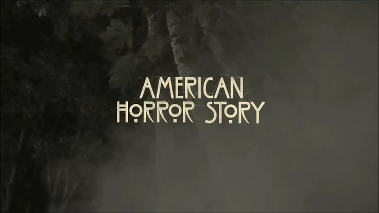
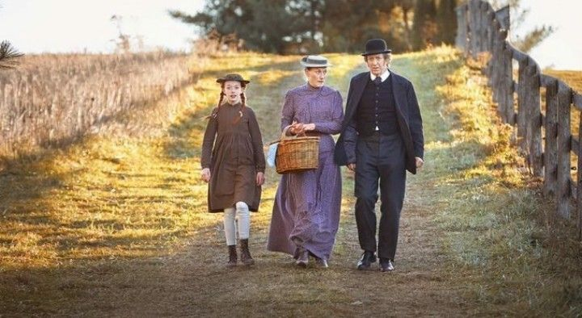
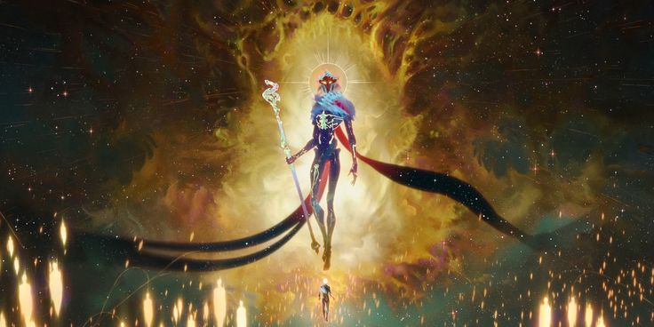
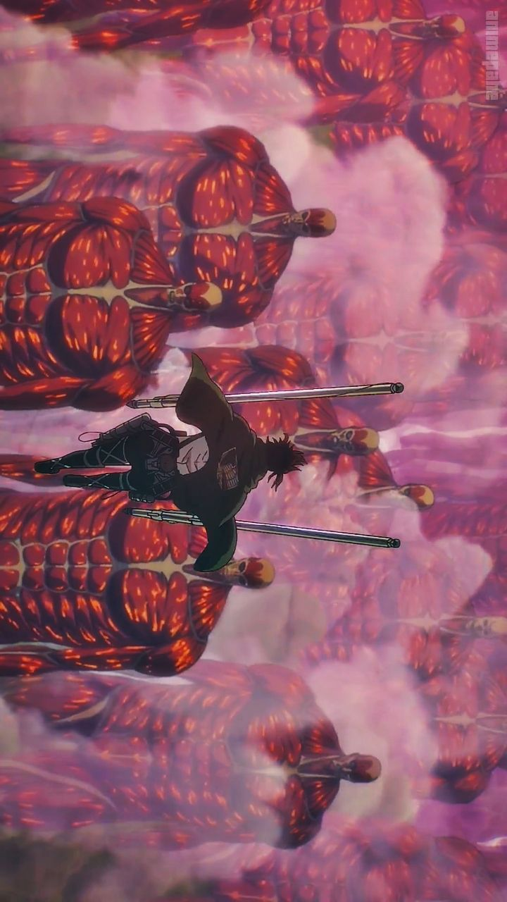

Game of Thrones (conocida como Juego de tronos) es una serie de televisión de drama y fantasía medieval desarrollada por David Benioff y D. B. Weiss y producida...
luchi4series
BREAKING
BAD
Breaking Bad es una serie de televisión estadounidense que se emitió entre 2008 y 2013, creada y producida por Vince Gilligan. Narra la historia de Walter White, un profesor de química con problemas económicos a quien le diagnostican...
luchi4series
DARK
SERIE
Dark es una serie de televisión web alemana de suspense y ciencia ficción creada por Baran bo Odar y Jantje Friese. Situada en la ficticia ciudad de Winden (Alemania), Dark sigue las secuelas de la desaparición de un niño...

luchi4series
AMERICAN HORROR
STORY
American Horror Story (a veces abreviada como AHS) es una serie de televisión estadounidense de antología y horror creada por Ryan Murphy y Brad Falchuk para la cadena de cable FX. Cada temporada se concibe como una miniserie autónoma, siguiendo...
luchi4series
THE WALKING
DEAD
The Walking Dead es una serie de televisión estadounidense de drama horror postapocalíptico de AMC basada en la serie de cómics homónima de Robert Kirkman, Tony Moore y Charlie Adlard.
Basada en la historieta escrita por Robert Kirkman... .
luchi4series
NEW
GIRL
New Girl es una serie de televisión estadounidense que se estrenó en Fox el 20 de septiembre de 2011. Desarrollado por Elizabeth Meriwether bajo el título de Chicks & Dicks, la serie gira en torno de una profesora fuera de lo común, Jess (Zooey Deschanel) luego de mudarse a un apartamento en Los Ángeles con...
luchi4series
THE LAST
OF US
The Last of Us es una serie de televisión estadounidense postapocalíptica que se estrenó el 15 de enero de 2023 a través de HBO. Basada en el videojuego de 2013 del mismo nombre desarrollado por Naughty Dog. La serie sigue a Joel...

luchi4series
ANNE
WITH AN E
Anne with an E (inicialmente titulada Anne en la primera temporada) es una serie de televisión canadiense basada en la obra clásica de literatura infantil de Lucy Maud Montgomery de 1908 Ana la de Tejas Verdes pero...

luchi4series
ARCANE
SERIE
Arcane es una serie de televisión por internet animada franco-estadounidense de aventuras y drama ambientada en el universo de League of Legends. La serie fue anunciada durante las celebraciones del décimo aniversario del videojuego.Fue desarrollada...

luchi4series
SHINGEKI
NO KYOJIN
Shingeki No Kyojin: también conocida como Ataque a los titanes en España y Ataque de los titanes en Hispanoamérica, es una serie de manga japonesa escrita e ilustrada por Hajime Isayama. El manga...
luchi4series
KIMETSU
NO YAIBA
Kimetsu No Yaiba: también conocida bajo su nombre en inglés Demon Slayer, o en español Guardianes de la noche, es una serie de manga escrita e ilustrada por Koyoharu Gotōge, cuya publicación comenzó el 15 de febrero ...